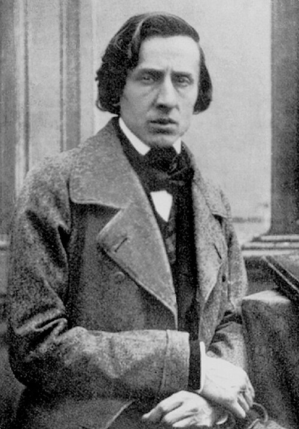
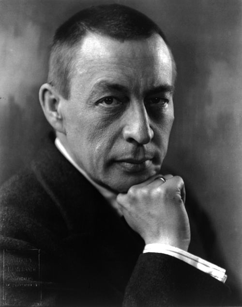
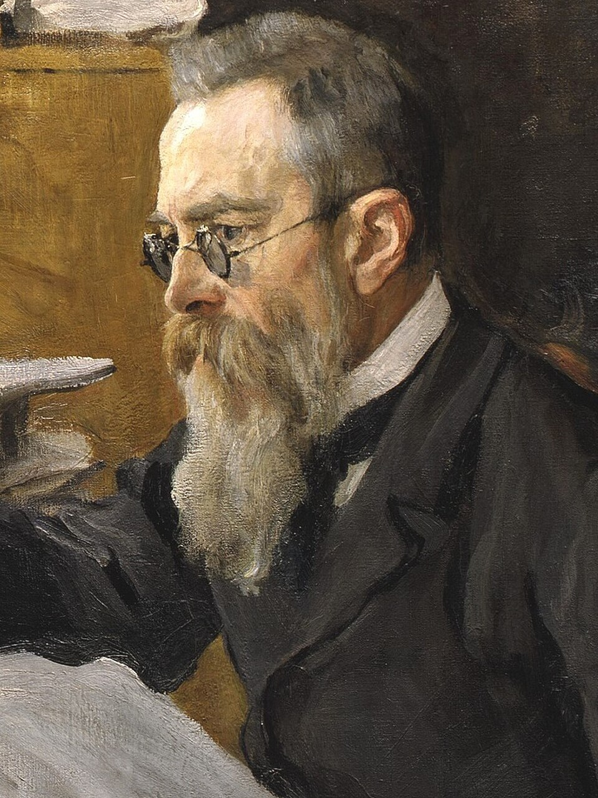
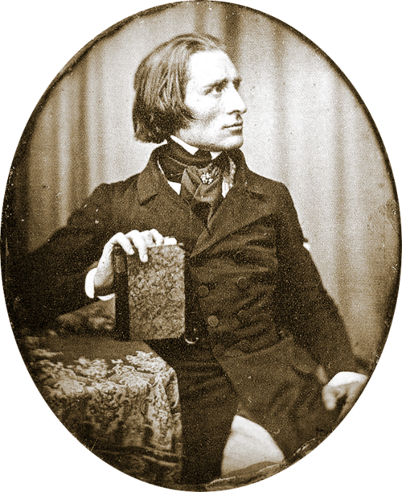
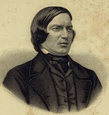
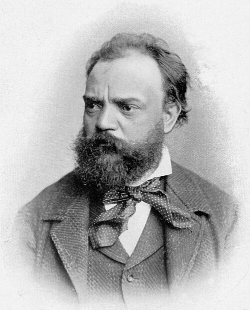
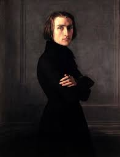
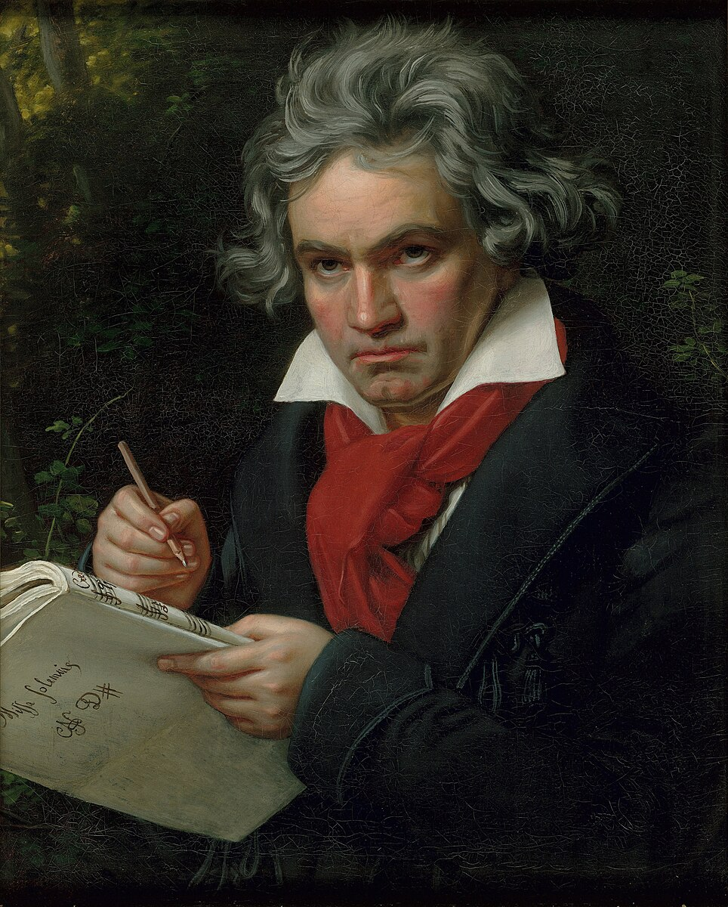
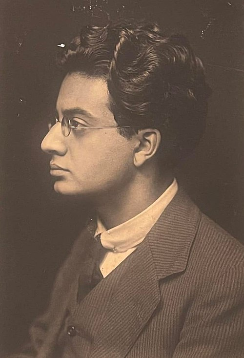
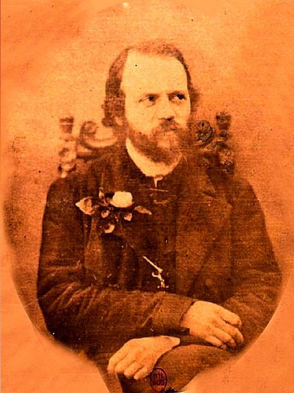

16 Piano Songs that Changed My Life
#1: Frederic Chopin - Revolutionary Etude

The Revolutionary Etude is the last of Chopin's 12 Etudes, Op. 10. It was inspired by the 1831 Battle of Warsaw and dedicated to his friend and colleague, Franz Liszt. It is a very fast and difficult song where the left hand is constantly running up and down the piano, and the right hand is playing giant chords all over the place.
It really captures the essence of a revolution, with the fast speed sounding like the rush of battle, and the melody sounding almost like gunfire.
#2: Domenico Scarlatti - Sonata K.427
You might not know who Domenico Scarlatti is. He was a Baroque era composer who lived from 1685 to 1757. He is best known for his 555 keyboard sonatas. Two of my favourites are the 141st and 427th. However, the 427th is a lot better in my opinion.
This sonata has the tempo marking: Presto quanto sia possibile, which translates to Play as fast as possible. Now, with that, you might think that it would be another very intense song, but it is actually very cheerful. The feverish happiness is nearly unparalleled by any other song of this time period, and is a great song to listen to.
Most of Scarlatti's sonatas weren't actually published during his lifetime, instead published by other composers later on, attributing him. He oversaw the publication of his first 30, some of the best known, the 30 Essercizi (exercizes). The rest were published in the more than 200 years since his life.
#3: Sergei Rachmaninoff - Little Red Riding Hood

For those who don't know, Sergei Rachmaninoff was a composer in the late 19th early 20th century. He is best known for having some of the largest hands ever, which is a very good thing when playing the piano.
Now, by the title of this song, you might think at first that it would be a sweet song, or maybe a song that follows the sequence of the popular fairy tale. Nope! It is based around starting off quiet, and then suddenly growing louder until some kind of explosion. During the quiet sections, there is a sense of anticipation, as though something is coming.
The song also starts off slow and grows faster, where near the middle it starts becoming incredibly fast, sounding like the pianist is fighting for their life. It is an incredibly difficult song.
It is from Rachmaninoff's Etudes-Tableaux, Op. 39, which was 9 difficult studies in different things, such as repeated notes and jumps in this song.
#4: Nikolai Rimsky-Korsakov - Flight of the Bumblebee

Flight of the Bumblebee is a very famous song, from the opera The Tale of Tsar Saltan. Made in 1900, it was originally made for orchestra. However, many ambitious pianists have arranged this incredibly fast song for piano, including Sergei Rachmaninoff, who created the arrangement of the audio below.
The original song sounds very much like its title. It almost sounds like the buzzing and slow ascent and descent of the bumblebee itself, where instead of jumping higher or lower, it plays every single note in between. On piano, it is very different. It is still the same notes, but because of the way pianos sound, it almost sounds like a lot of bees. Either way, the incredibly fast song is just amazing.
Even though it has a very minor part in the play, this song has been used in popular culture due to its speed, and to represent bees, making it one of the more famous classical songs.
Audio from classicals.de
#5: Franz Liszt - Mephisto Waltz no. 1

For those who don't know, Franz Liszt was a hungarian composer, and one of the greatest pianists that ever lived. He is known for making some of the hardest songs ever made for piano.
Liszt's Mephisto Waltz no. 1 is one of my favourite songs by him, as well as many others. Now, waltzes are characterized by having an oom-pah-pah rhythm. Yeah, Liszt didn't do that. Listening to the song, it has the 3-beat rhythm, but instead, is has Liszt's characteristic insanity and speed. It is a great take on a waltz, and opens up a new door for its possibilities.
Liszt meant this music to tell a story, and the following was on the printed score, from Nikolaus Lenau's 1836 drama "Fause"
"There is a wedding feast in progress in the village inn, with music, dancing, carousing. Mephistopheles and Faust pass by, and Mephistopheles induces Faust to enter and take part in the festivities. Mephistopheles snatches the fiddle from the hands of a lethargic fiddler and draws from it indescribably seductive and intoxicating strains. The amorous Faust whirls about with a full-blooded village beauty in a wild dance; they waltz in mad, abandon out of the room, into the open, away into the woods. The sounds of the fiddle grow softer and softer, and the nightingale warbles his love-laden song."
#6: Robert Schumann - Traumes Wirren, Op. 12 no. 7

Robert Schumann was a German composer and pianist. He was one of the main pioneers of the early Romantic era, and made some revolutionary piano songs.
Schumann's Fantasiestücke, Op. 12 was one of his earlier piano works, a collection of 8 pieces inspired by the 1814/1815 collection of writings about music, Fantasy Pieces in Callot's Manner.
In particular, the 7th piece stood out to me. It is known as one of the hardest pieces ever written, containing hard jumps (for people with small hands), and uses the weak fingers, the ring finger and pinky finger, to play fast trills, turning them into limp noodles (or iron, depending on the pianist). It creates a cool effect, combined with the harmony similar to many ragtime pieces, to be one of my favourite songs.
#7: Antonín Dvořák - New World Symphony Movement IV

Antonín Dvořák was a 19th century Czech composer. He was very influential, displaying his musical gifts at a young age. During his life, he made 9 symphonies, the most famous of which was his 9th symphony "From the New World", often called "New World Symphony". The 4th movement of this is one of my favourite songs, also one of Antonín Dvořák's most famous.
When played on piano, similar to Flight of the Bumblebee, gives a really cool effect when the fast sections come about. Plus, it is in the key of E Minor, and I am completely obsessed with fast songs in that key. It just gives an extra flare to the song that I haven't really seen in any other key. This is just my opinion though.
#8: Franz Liszt - Transcendental Étude No. 2 "Fusées"

When he was 14, Franz Liszt wrote a set of 12 Études called "Étude en douze exercices" (study in 12 exercizes). 12 years later, he used those ideas to make "Douze Grandes Études" (Twelve Grand Studies), which made them a lot more technically demanding. Later, he made those even more technically demanding with the "Études d'exécution transcendante" (Studies of transcendental execution). These are some of the most challenging pieces ever written, but one stood out to me.
The second transcendental étude was originally written without a name, however it was given the nickname "Fusées", which translates to "Rockets", and boy does it live up to its name. Most of the song has this pattern where the hands alternate really quickly, making it sound twice as fast as it is. As well as that, there is a repeated motive that sounds like part of the rocket as well. Definitely one of my favourite songs.
#9: Ludwig van Beethoven - Symphony no. 9 IV

You might be thinking, "Oh wow, Beethoven's second most famous symphony, I thought these were all songs nobody's ever heard of!". Don't get too comfortable, this is the arrangement by Franz Liszt. Liszt arranged this symphony in the 1860s, and it was regarded as the most difficult piano piece ever. Now, it is only one of the most difficult now, but it's still crazy.
Similar to Flight of the Bumblebee and New World Symphony, this song has a completely different feel when played on piano. However, these symphonies are so difficult, that some people go as far as to say that there is only one person that can play it well: Cyprien Katsaris. To be fair, Katsaris some of the best performances of it, with a similar speed to his in the audio recordings below. His take on these elevate the beethoven symphonies very well.
Liszt himself spent much longer transcribing this symphony than any other. He was never fully satisfied with it.
#10: Kaikosru Sorabji - Opus Archimagicum

Kaikosru Shapurji Sorabji was a 20th century composer, mostly composing for piano. His main reputations are: Long, Difficult and Insane. Opus Archimagicum is a great example of pure Sorabjiness.
First of all, Opus Archimagicum takes a total of about 9 hours to play. And for most of those 9 hours, neither you, nor the audience has any idea if you are playing the right notes. In fact, this song is often regarded as the most difficult piano piece ever written. You might be seeing a theme in the pieces I am choosing.
Even though it sounds like this piece would be a pain to listen to, even any part of it, it is still a great song, and opens up windows into what modern music is like. Other songs like this include pretty much all of the rest of Sorabji's works, and works by other composers, such as Michael Finnisy, Karlheinz Stockhausen, Iannis Xenakis, John Cage, etc.
#11: Matthew Lee Knowles - For Clive Barker

Matthew Lee Knowles is a guy that is still alive. He is a composer and pianist. That's pretty much all you really need to know about him.
He had an idea to turn every letter of a book into a piano song. He chose Clive Barker's The Hellbound Heart. It took about 6666 hours to write in total, and it takes a total of 26 hours to play. This man put his heart and soul, and most of the time that is in a year, to write this piece, meant to be played as one piece, and it has never been played. The recording below is a synthesized recording. Sad story, innit?
#12: Dimrain47 - At the Speed of Light
For a very long time, before I got obsessed with piano music, I was obsessed with electronic music. I found certain arrangements of this song I liked called "At the Speed of Light" and immediately fell in love with the song.
First of all, the song is fast. Very fast. However, it has some contrasting sections that sound like peaceful piano music, even in the song, but then, there are some keychanges. Keychanges are when the key of the song changes, and It can give a very cool effect, such as in this song. It also helps that it gets more intense at the end, with larger chords, and slightly faster and louder. Overall, it has an amazing finale, and is one of my favourite songs.
#13: 椎名もた - 少女A (Young Girl A)
I was listening to some piano music, and this one song popped up called "Siinamota - Young Girl A (Piano)". I clicked on it, and it was actually amazing. I looked into the song, and apparently it is a JPop song. So, I listened to more songs by that pianist, and it introduced me to the world of JPop, which i snow my second favourite genre of music.
椎名もた (Shiinamota, sometimes Siinamota) was born in 1995. He started playing instruments, such as the electronic piano, at a very yound age, and by the time he was 14, he began making music. For the next 6 years, he was making music, but one of his songs, Young Girl A, completely blew up, reaching 150 million views on YouTube in 2024. However, just 30 minutes after publishing an album called "Alive", he died. No one knows how, but that is up to speculation. There is a deeper story behind this that I don't have space to put here.
The song itself is amazing. It begins with a jubilant introduction, moving to a fast lyrics section, to a slower section, and then the chorus. The chorus is probably the most intense part of the song, repeated after another fast section, and then a slow section. The contrast between these sections is what gives Young Girl A its flare, as well as a keychange that goes into an even more intense version of the chorus, and then ends with an intense version of the introduction. Overall, an amazing song.
However, the song changes when you look at the lyrics. This is a rough translation of the lyrics (by Google), but it is pretty easy to get the gist of it from this.
Even if you say it's my life, even if you say it's someone's life, sometimes it's judged fairly. It came under dark skies, bringing depression with it. The occasional rain, I'm relying entirely on the total, what should I do? You swallow the love and hate until they decay, the love and hate until they decay, you smile so easily, why? I write words ambiguously, I write words ambiguously. Because I can't fully convey it, I only believe in you. I gather up the dreams I've abandoned, because I made a little, little mistake.
Another reason I like it is because it is the most difficult song I've been able to play on piano.
Note: The audio used is missing a few parts.
#14: Charles-Valentin Alkan - 12 Études in all the Minor Keys

Back to classical music! Charles-Valentin Alkan was an Early-Romantic Era composer, around the same time as Chopin. He is best known for these 12 Études in all the Minor Keys, although he isn't very well known at all. He is also known for writing some of the most difficult piano pieces ever, similar to Franz Liszt.
These 12 Études in all the Minor Keys are divided into 3 groups. The Symphony for Solo Piano is the 4th through 7th, the Concerto for Solo Piano is the 8th through 10th, and the rest are nothing special. However, my personal favourite of all of these is the 8th, in G# Minor, particularly a moment in the middle, about an hour through the entire collection. The entire collection is incredibly good, and incredibly difficult. The concerto is known as one of the most difficult piano pieces.